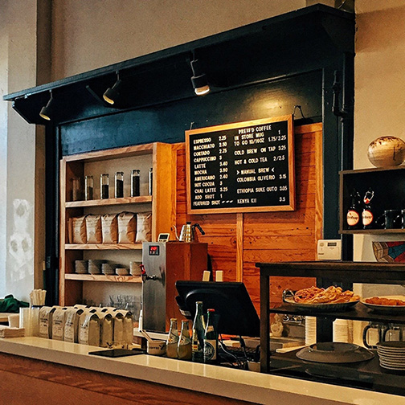
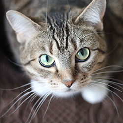
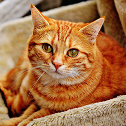
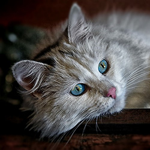
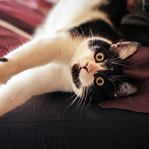
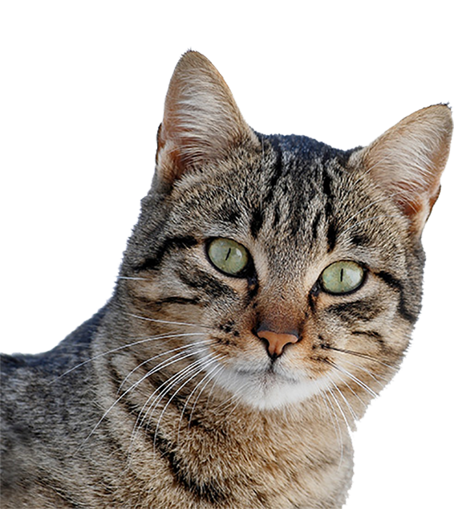
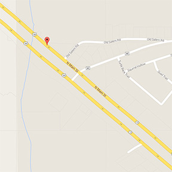
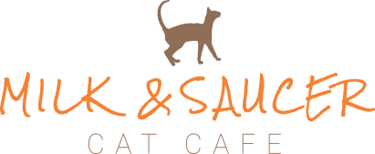

<!DOCTYPE <!DOCTYPE html>
<html lang="en-us">
<head>
  <meta http-equiv="X-UA-Compatible" content="IE=Edge">
  <meta name="viewport" content="Width=device-width, initial=scale=1">
  <meta charset="UTF-8">
  <title>Milk and Saucer Cat Cafe | Enterprise, Alabama</title>

  <!--GoogleFonts-->
  <link href='https://fonts.googleapis.com/css?family=Roboto:400,300,700|Rock+Salt|Roboto+Slab:400,300,700' rel='stylesheet' type='text/css'>


  <!--CSS-->
  <link rel="stylesheet" href="css/normalize.css">
  <link rel="stylesheet" href="css/style.css">
  <link rel="stylesheet" href="css/font-awesome.css">
  <link rel="stylesheet" href="css/animate.css">

</head>
<body>
  <!-- SMOOTH SCROLL -->
  <script src="https://ajax.googleapis.com/ajax/libs/jquery/1.7.2/jquery.min.js"></script>
<script>
    // Document ready shorthand statement
    $(function() {
      $('.smoothScroll').click(function() {
        var id = $(this).attr('href');
        $('html,body').animate({ scrollTop: $(id).offset().top }, 'slow');
        // Prevent default behavior of link
        return false;
      });
    });
</script>
  <!-- End of SMOOTH SCROLL -->

<header>
  <nav class="container">
    <div class="one-half">
      <a href="index.html" class="site-logo"></a>
    </div>
    <div class="one-half links">
      <ul>
        <li><a href="#header" class="smoothScroll">Home</a></li>
        <li><a  href="#about" class="smoothScroll">About</a></li>
        <li><a class="smoothScroll" href="#adopt">Adopt</a></li>
        <li><a class="smoothScroll" href="#donate">Donate</a></li>
        <li><a class="smoothScroll" href="#faq">FAQ</a></li>
        <li><a class="smoothScroll" href="#contact">Contact</a></li>
      </ul>
    </div>
  </nav>
  <div class="container hero">
    <h1>Helping cats find their <br> <span>furever home...</span> <br> One cup at a time.</h1>
    <p>123 Main Street Enterprise, AL | <a href="tel:+1+334-367-1234">334-367-1234</a> <br> Monday - Friday | 11 a.m. - 3 p.m.  Saturday & Sunday | 10 a.m. - 4 p.m.</p>
  </div>
</header>

<main role ="main">
  <!--ABOUT-->
  <section class id="about">
    <div class="container">
      <div class="one-half interior">
        
      </div>
      <div class="one-half">
        <h2>Who We Are</h2>
        <p>The Milk Saucer Cat Cafe is a coffee shop and cat adoption center through a partnership with two local resues, the SOS Animal Shelter and Wiregrass Pet Rescue. <br> We offer a selection of coffee, teas, assorted beverages and snacks. You will enter through the cafe and will register at the counter to enter into our Cat Room. There is a small  donation fee in order to  spend time with the cats, but if you purchase anything from our cafe, this will act  as your fee. If you decide to adopt, this fee will also go towards the adoption. Reservations are not required, but are encouraged.
          See our <a href="#faq">FAQ</a> for more information.</p>
      </div>
    </div>
  </section>

  <!--ADOPTION-->
  <section class id="adopt">
    <div class="container">
      <h2>Adoption</h2>
      <p>Our cats in residence are hosted from two local shelters. If you visit us and find your new companion, let us know! Adoptions are handled after hours and an application must be filled out beforehand.
    </div>
      <ul class=container>
          <li class="one-fourth">
            
            <p class="name">Jake<br><span>1 year old</span></p>
          </li>
          <li class="one-fourth">
            
            <p class="name">Buster<br><span>1 year old</span></p>
          </li>
          <li class="one-fourth">
            
            <p class="name">Molly<br><span>2 years old</span></p>
          </li>
          <li class="one-fourth">
            
            <p class="name">Socks<br><span>3 years old</span></p>
          </li>
      </ul>
      <div class= "box">
        <p>Call us at <a href="tel:+1+334-367-1234">334-367-1234</a> to make a reservation to visit with our cats</p>
      </div>
    </section>

  <!--DONATE-->
  <section class id="donate">
    
      <div class="container donate">
          <h2>Donations</h2>
            <p> Milk & Saucer is a local non-profit organization supported almost entirely by your contributions. We use proceeds from the cafe to take care of our cats in residence, but they are not always enough.
                We have vet bills, food bills and anything else the cats may need. We also like to help the shelters that allow us to have the cats in our cafe.</p>
                  <div class="one-fourth">
                      <a href="paypal.com" class="btn"><i class="fa fa-paw"></i><span> Donate </span><i class="fa fa-paw"></i></a>
                  </div>
                    <div class="one-fourth small">
                        <p>To donate by mail, please send a check, made payable to Milk & Saucer, to: 123 Main Street, Enterprise, AL 36330</p>
                    </div>
                  </div>
                </section>

<!--FAQ-->
<section class id="faq">
  <div class="container">
    <h2>Frequently Asked Questions</h2>
  <div id="questions">
    <div class="one-half left">
      <h3>Q. Can I bring my cat to the Cat Room?</h3>
      <p>A. No. The purpose of the cafe is to provide company to patrons who are unable to have a cat at home and to help our partner rescues find permanent homes for their cats. </p>
      <h3>Q. Can I bring my cafe food/drink into the Cat Room?</h3>
      <p>A. Yes, food and drinks purchased in the cafe are allowed. We do not allow outside food and drink, and please don’t feed the cats.</p>
      <h3>Q. Is there a charge for entry?</h3>
      <p>A. Yes, there is a small fee for entry. We charge $5 on the weekends and $2 during the weekdays. However, if you purchase anything from the cafe, this will act as your entry fee.</p>
    </div>
    <div class="one-half right">
      <h3>Q. How many cats do you have?</h3>
      <p>A. We have anywhere between 8-15 cats at a time.</p>
      <h3>Q. Do I need to make a reservation?</h3>
      <p>A. Reservations are not required but are encouraged.</p>
      <h3>Q. How many people do you allow in the Cat Room?</h3>
      <p>A. We allow 10 people at a time in the Cat Room. On normal days we allow 45 minutes, but if we have more patrons than usual we may have to shorten the time.</p>
      <h3>Q. Can I volunteer?</h3>
      <p>A. Yes! Many of our staff are volunteer based and we are always looking to add more. Please call us or come by to fill out an application.</p>
    </div>
  </div>
</div>
    <div class="container box">
      <p> If your question is not listed, please email us at <a href="mailto:info@milkandsaucer.com">info@milkandsaucer.com</a></p>
    </div>
</section>

<!--CONTACT-->
<section class id="contact">
  <div class="container">
      <div class="one-third">
        
      </div>
      <div class="one-third info">
        <h2>Contact Us</h2>
        <p>Located at <br>123 Main Street <br>Enterprise, AL 36330 <br>Call us at<br><a href="tel:+1+334-367-1234">334-367-1234</a> <br>Email us at <br><a href="mailto:info@milkandsaucer.com">info@milkandsaucer.com</a></p>
      </div>
      <div class="one-third logo">
        
      </div>
  </div>
</section>
</main>

<!--FOOTER-->
  <footer>
    <div class="container">
        <div class="one-third">
          <p class="copyright-block">&copy; 2016. <strong>Milk and Saucer Cat Cafe</strong></p>
        </div>
        <nav class="one-third links">
          <ul>
            <li><a href="#header">Home</a></li>
            <li><a href="#about">About</a></li>
            <li><a href="#adopt">Adopt</a></li>
            <li><a href="#donate">Donate</a></li>
            <li><a href="#faq">FAQ</a></li>
            <li><a href="#contact">Contact</a></li>
          </ul>
        </nav>
        <div class="one-third social">
          <a href="#"><i class="fa fa-facebook-square"></i></a></li>
          <a href="#"><i class="fa fa-instagram"></i></a></li>
          <a href="#"><i class="fa fa-twitter-square"></i></a></li>
        </div>
    </div>
  </footer>
</body>
</html>
